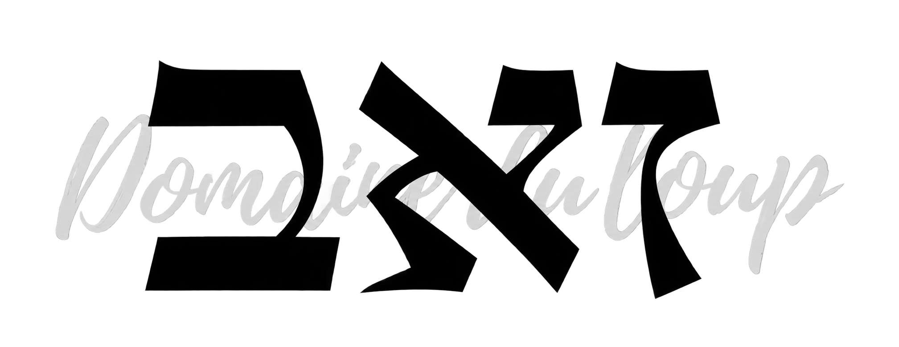
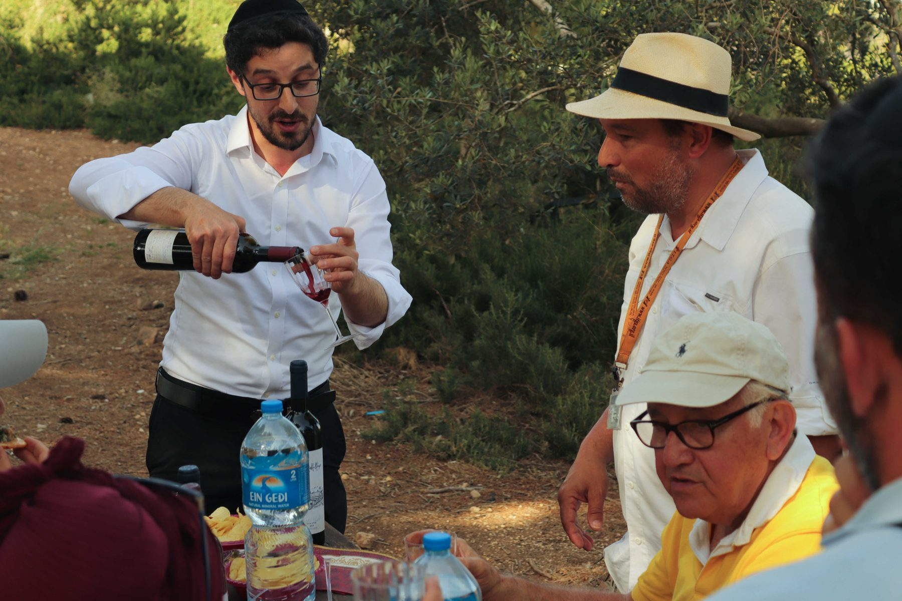

Découvrir le domaineKIRYAT YEARIM · COLLINES DE JUDÉE
Le vin, une histoire
de rencontres.
Un petit domaine, une grande passion. Découvrez l’univers de Zeev, où l’amour du vin se partage, tout simplement.
Découvrir le domaineÉchangeons avec Zeev
01 / LE DOMAINE
Une terre.
Une passion.
Une histoire à partager.
Zeev Zyzek Vigneron
Bienvenue au Domaine du Loup, aussi connu sous le nom de Yekev Zeev.
C’est à Kiryat Yearim, dans les collines de Judée près de Jérusalem, que Zeev Zyzek fonde son domaine en 2011. Son amour des créations de Dieu et son attachement à l’étude de la Torah et du Talmud nourrissent sa découverte du monde du vin.
Les raisins sont choisis avec soin dans les vignobles de la région et du Golan. Cabernet Sauvignon, Merlot, Petite Syrah et Carignan expriment chacun leur caractère. Le temps passé en fûts de chêne français vient affiner leur personnalité.
Au plaisir de faire votre connaissance et de partager notre passion.
02 / INSTANTS PARTAGÉS
Autour d’un verre.
Des dégustations, des échanges et le plaisir de découvrir le vin ensemble, que l’on soit curieux ou connaisseur.


Voir toutes les photos
03 / FAISONS CONNAISSANCE
Tout commence
par un échange.
Une question sur le domaine, nos vins ou les dégustations ? Écrivez à Zeev.
yekevzeev@gmail.comKiryat Yearim · Collines de Judée · Israël
Nous trouver sur la carte ↗